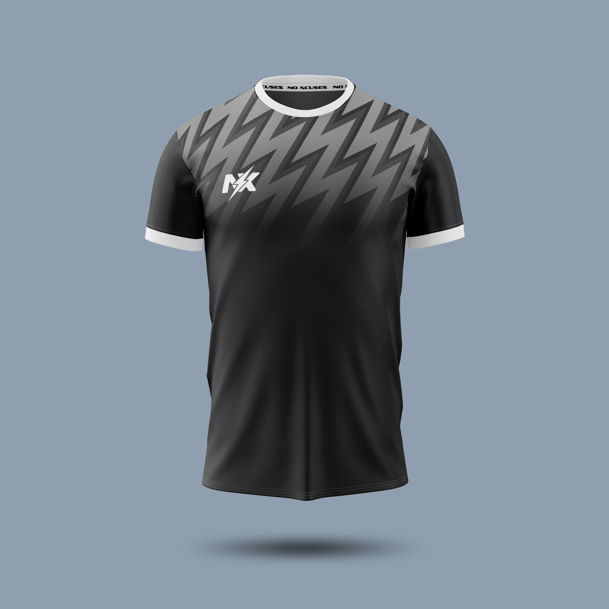
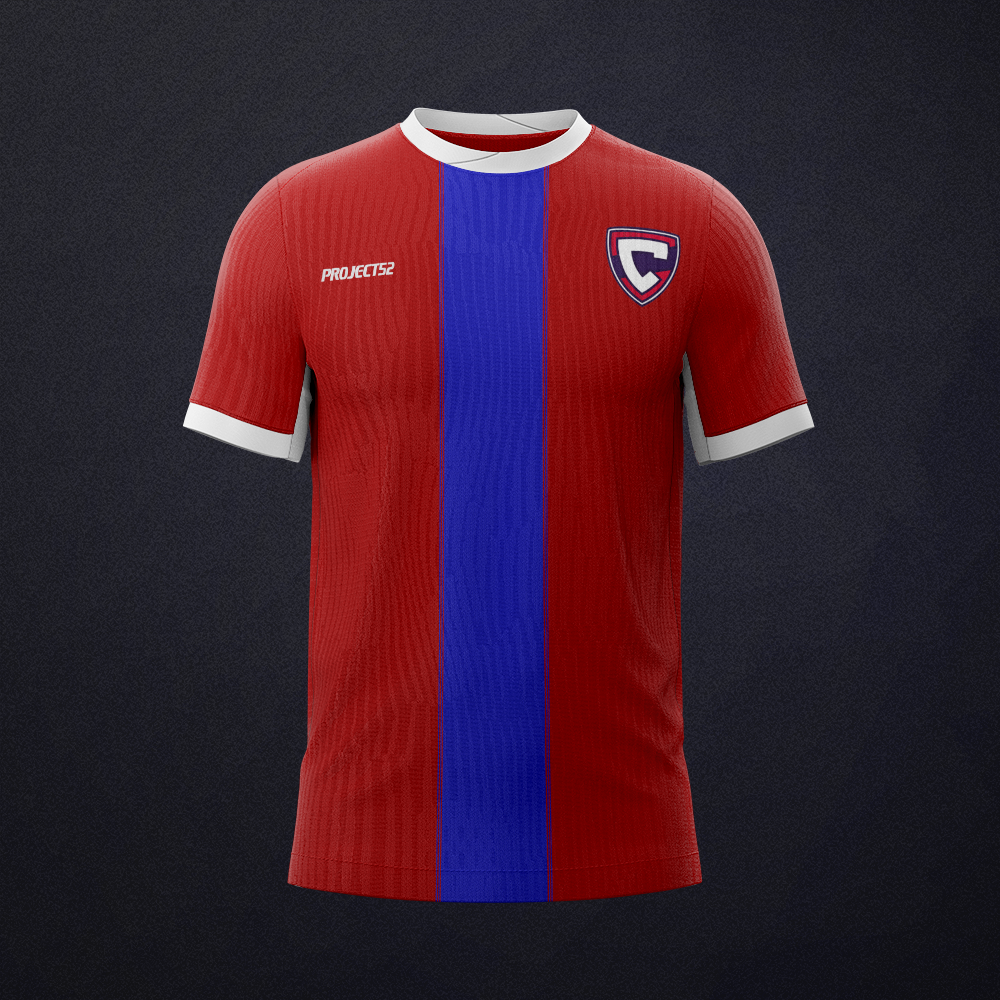
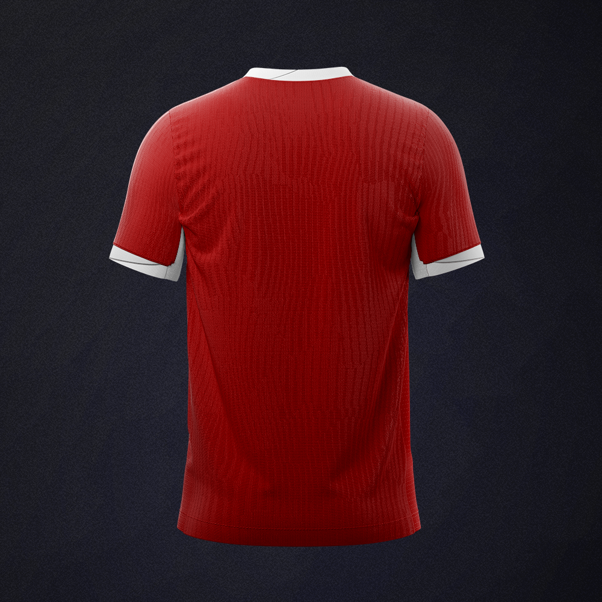
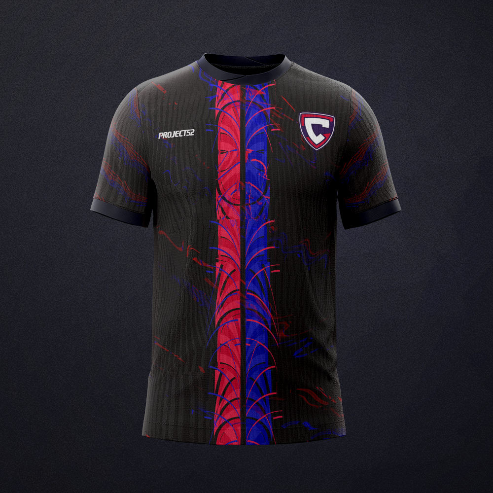
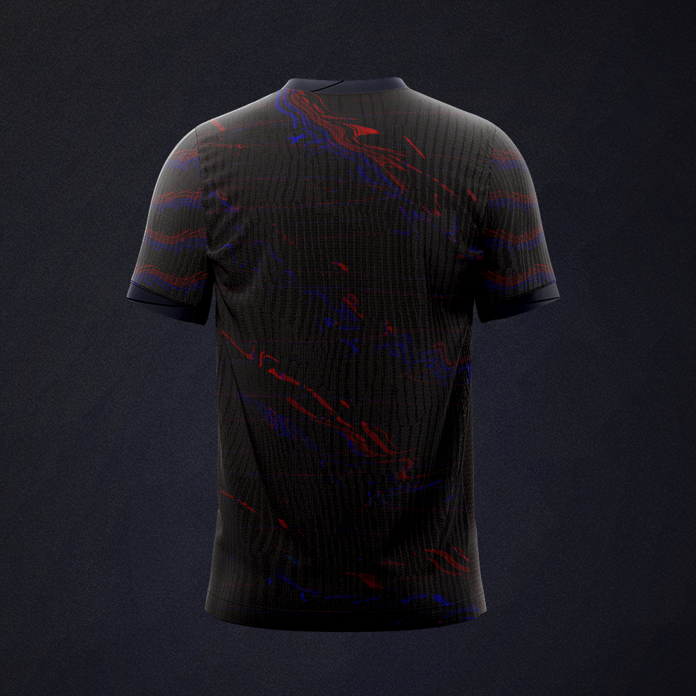
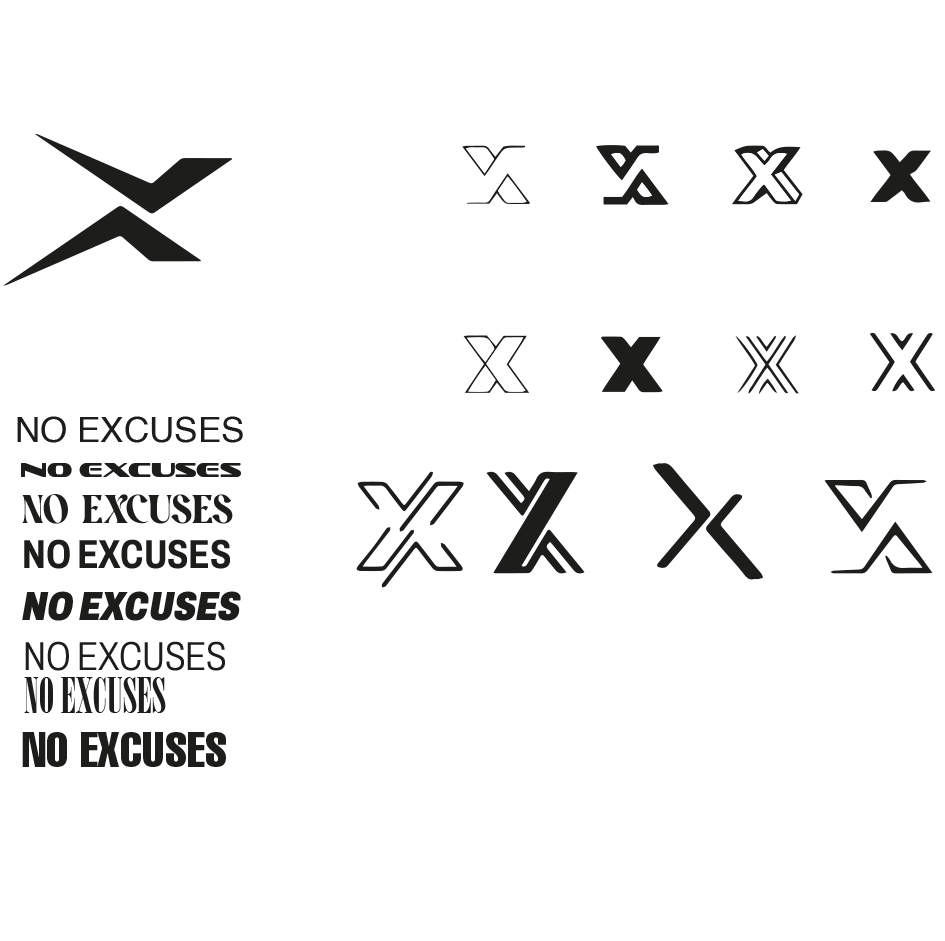
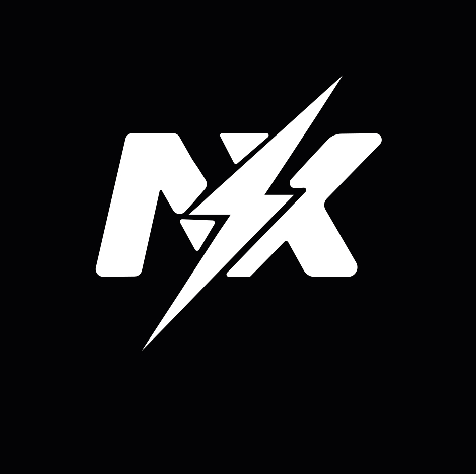
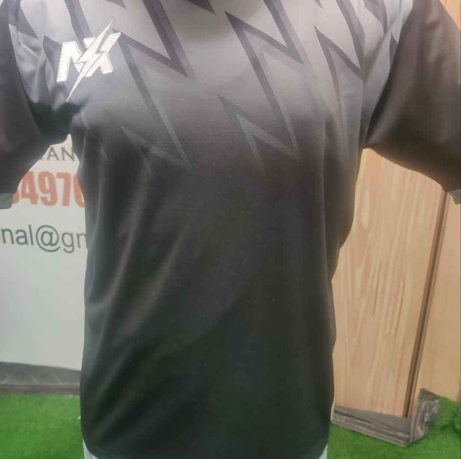
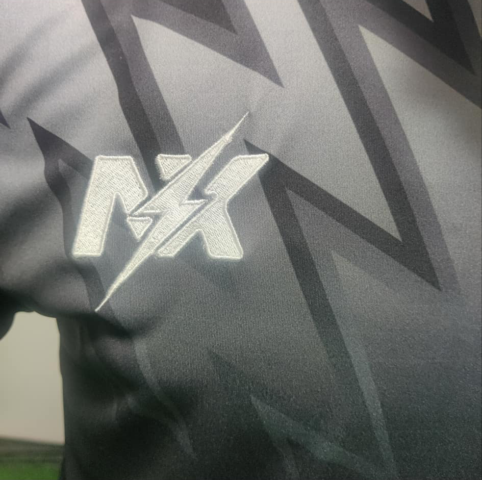
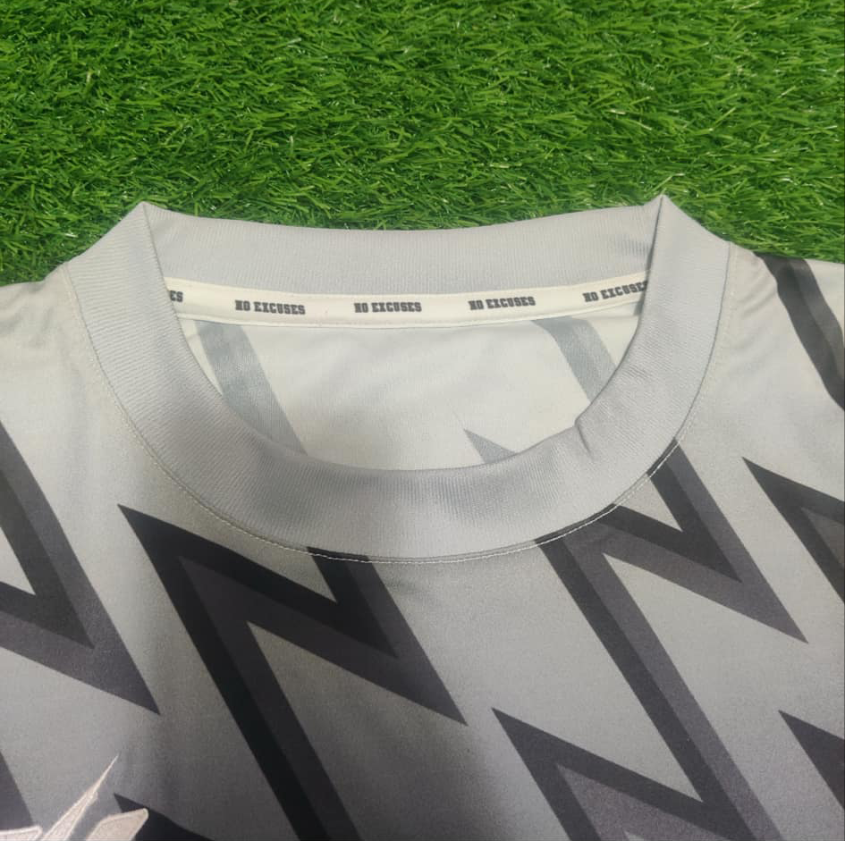

NO
EXCUSES
Od zlecenia dla akademii do kompletnego systemu marki sportowej. Historia jak jeden projekt zmienił kierunek i stał się czymś więcej.
Skąd się
to wzięło
Trener akademii piłkarskiej AP Cassubian zgłosił się z pomysłem stworzenia własnej marki odzieżowej. Celem projektu było zaprojektowanie kompletnego zestawu meczowego składającego się z koszulki meczowej, wyjściowej oraz spodenek.
Pierwsza wersja powstała pod marką Project52, w kolorystyce nawiązującej do barw akademii. W trakcie procesu koncepcja uległa zmianie, zamiast współpracy pod istniejącym logo pojawiła się decyzja o budowie całkowicie nowej, niezależnej marki.
W efekcie powstało NO EXCUSES. Wraz z nową identyfikacją wizualną, paletą kolorystyczną, logo oraz systemem graficznym dla odzieży sportowej.
NO EXCUSES




Jak powstało
logo

Eksploracja - warianty X, typografia, kierunki
Punkt wyjścia to litera X, czyli skrót od "excuses". Testowane były dziesiątki wariantów: konturowe, pełne, z nasadkami, geometryczne, przekładane.
Równolegle badana była typografia hasła "NO EXCUSES" od serif po condensed bold, od delikatnych po agresywne kroje.
Finalne logo N/X to połączenie liter N i X przeciętych błyskawicą. Energia, prędkość, charakter marki sportowej skierowanej do młodych zawodników.

Finalna wersja logo - haftowana na stroju
Język marki
Pełna skala szarości. Odejście od barw klubowych, gdzie kolor nie definiuje kitu, definiuje go pattern i logo. Monochromatyczność nadaję charakteru premium.
Sofachrome to font o sportowym, kanciastym charakterze. Używany na tasiemce kołnierza, oznaczeniach i całej komunikacji marki.

Błyskawice jako motyw przewodni - geometryczne echo litery X z logo. Pattern sublimowany na tkaninę, gradient od góry do dołu tworzy głębię i dynamikę. Ten sam wzor występuje na obu wariantach stroju.
Z ekranu
na boisko
Projekt trafił do szwalni za granicą. Sublimacja wzoru na tkaninie, haftowanie logo N/X na piersi, personalizowana tasiemka "NO EXCUSES" w kołnierzu. Fizyczny produkt który istnieje poza ekranem.



Czego nauczył
mnie ten projekt
System jest ważniejszy niż pojedynczy element
Logo to tylko część całości. Dopiero razem z kolorami, wzorami i detalami tworzy spójny charakter marki. Ten projekt pokazał mi, że marka działa najlepiej wtedy, gdy każdy element wspiera pozostałe.
Zmiana kierunku jest częścią procesu
Przejście z Project52 na NO EXCUSES było decyzją o własności i tożsamości. Niekiedy najlepszy projekt to ten, który sam zmienia swój kierunek w trakcie.
Projektowanie pod produkcję
Mockup w PS to jedno. Zobaczenie haftu N/X na realnej tkaninie to inny poziom. Produkcja weryfikuje projekt bezlitośnie i uczy szacunku do detali.